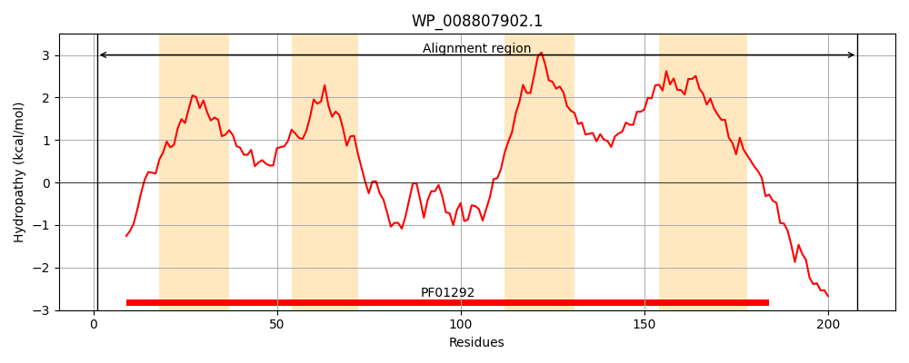
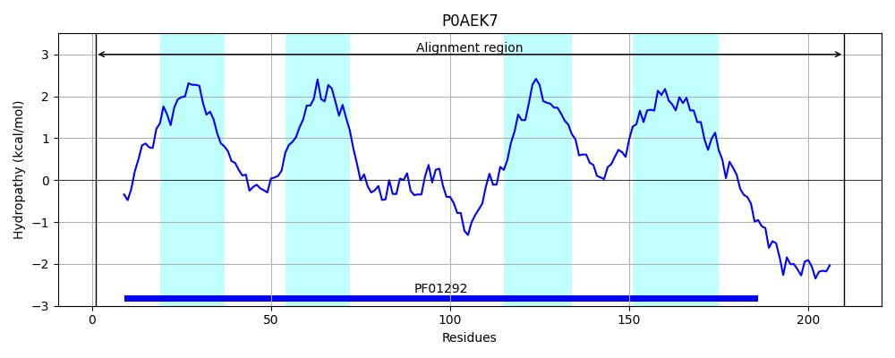
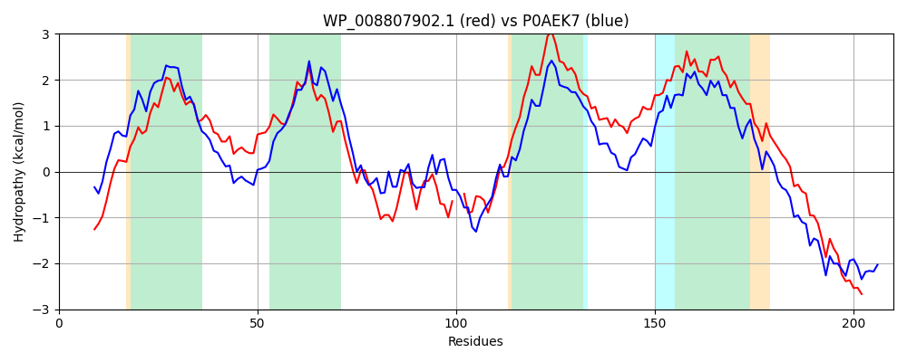

Hit Accession: P0AEK7
Hit TCID: 5.A.3.2.1
Hit Description: gnl|BL_ORD_ID|8783 gnl|TC-DB|P0AEK7|5.A.3.2.1 Formate dehydrogenase, nitrate-inducible, cytochrome b556(fdn) subunit - Escherichia coli.
Mach Len: 210
e:0.000000
Query TMS Count : 4
Hit TMS Count: 4
TMS-Overlap Score: 3.850000
Predicted Substrates:CHEBI:10545;electron
BLAST Alignment:
Score: 585 , Bit scores: 229 bits, E-value: 6.4e-77, Alignment length: 210, Percentage identity: 48
Query: 1 MKRRDTIVRYTAPERINHWVTAFCFVLAAVSGLGFFFPSFNWLMHILGTPQLARILHPFVGVVMFASFIIMFFRYWHHNLINRDDIFWAKNIRKIVVNEE--VGDTGRYNFGQKCVFWAAIILLVLLLVSGVIIWRPYFAPAFSIPVIRFALMLHSFAAVALIVVIMVHIYAALWVKGTITAMVEGWVTKTWAKKHHPRWYREVRQKQEK 208
M + IVR +R HW CF L A+SG+ FFFP+ WL GTPQ+ RILHPF G+ +F + + MF R+ HHN+ ++ DI W NI +++ E V D G+YN GQK +FW+ + ++ +LLV+GVIIWRPYFA F + V+R++L++H+ A + LI I++H+Y A WVKG+I M+EG V++ WAKKHHPRWYRE+ + + K
Sbjct: 1 MSKSKMIVRTKFIDRACHWTVVICFFLVALSGISFFFPTLQWLTQTFGTPQMGRILHPFFGIAIFVALMFMFVRFVHHNIPDKKDIPWLLNIVEVLKGNEHKVADVGKYNAGQKMMFWSIMSMIFVLLVTGVIIWRPYFAQYFPMQVVRYSLLIHAAAGIILIHAILIHMYMAFWVKGSIKGMIEGKVSRRWAKKHHPRWYREIEKAEAK 210 | Protein Hydropathy Plots: |
|---|
|  |  |
Pairwise Alignment-Hydropathy Plot:
|
|---|
|  |